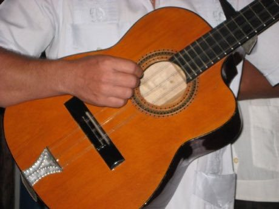

Home / Living Traditions / The Americas: Caribbean
Encyclopedia ID 433
Tres cubano
Also known as son guitar


Strum the three double strings of the tres in the montuno pattern with the clave and bongo beat to build a Cuban son ensemble.
Heritage note
Part of the living heritage of Cuba.
Origins
A living tradition passed from person to person; it is not tied to a single dated origin. It belongs to the cultural world of The Americas: Caribbean.
Sources
Related entries

Mento band
Jamaica · Musical instruments
Santur Hammer Strings
Iran +3 · Musical instruments


Goje One-String Fiddle
Nigeria +1 · Musical instrumentsPlay preview · in the String Music of the World app
More from Cuba


Four Corners
Cuba · Street and playground games

Stickball
Cuba · Bat-and-ball games